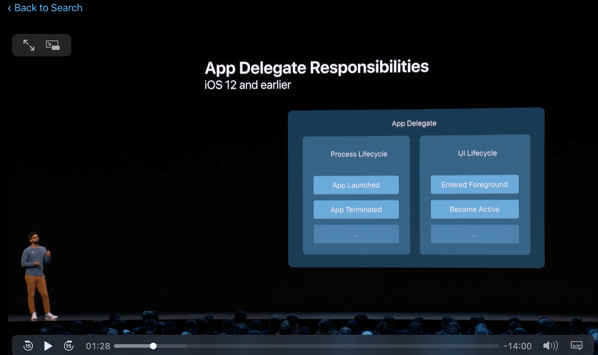
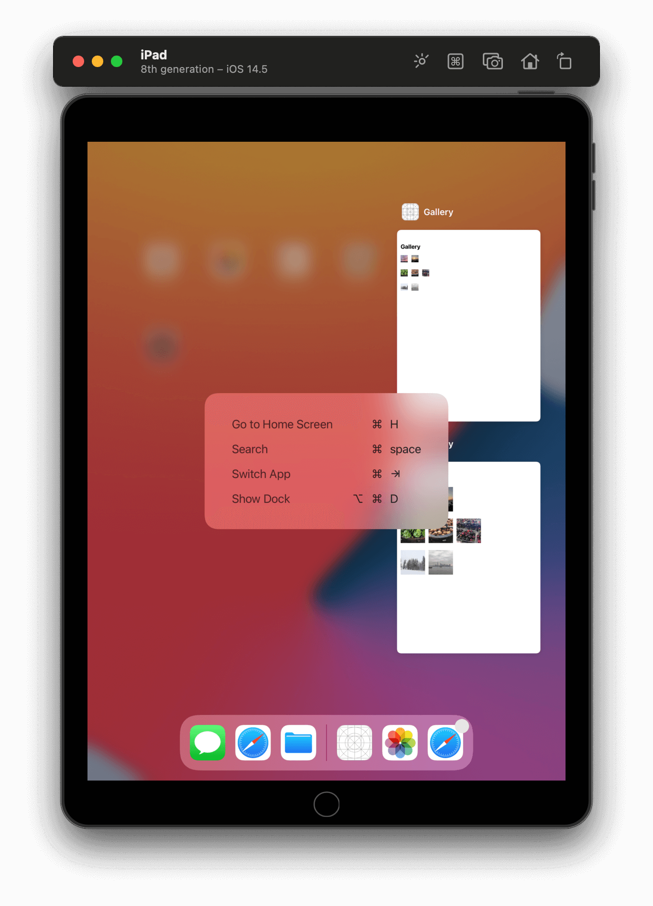
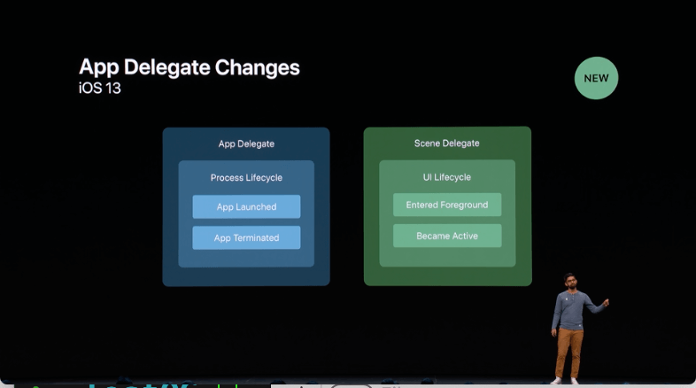

UISceneDelegate是什么，它和AppDelegate有什么关系，Swift中的@main又是什么，本文将带你一一了解。
这篇文章将主要讲解下面几点内容：
- iOS13之前的
AppDelegate启动项目的流程 UISceneDelegate的多窗口实现逻辑UISceneDelegate和AppDelegate的关系int main()和@main
UISceneDelegate是什么，它和AppDelegate有什么关系，Swift中的@main又是什么，本文将带你一一了解。
这篇文章将主要讲解下面几点内容：
- iOS13之前的
AppDelegate启动项目的流程 UISceneDelegate的多窗口实现逻辑UISceneDelegate和AppDelegate的关系int main()和@main
到公众号【iOS开发栈】学习更多SwiftUI、iOS开发相关内容。
单Window的AppDelegate
在iOS13之前iPhone上的项目都是单windows的，AppDelegate中的- (BOOL)application:(UIApplication *)application didFinishLaunchingWithOptions:(NSDictionary *)launchOptions就是iOS项目启动后第一个会被调用的函数。
纯代码在AppDelegate中启动App
AppDelegate中有一个window属性，需要自己来给windows指定一个rootViewController，在不使用storyboard或者xib的情况下，最简单的AppDelegate代码大概是下面这样子：
// AppDelegate.h
@interface AppDelegate : UIResponder <UIApplicationDelegate>
@property (nonatomic) UIWindow *window;
@end
// AppDelegate.m
#import "AppDelegate.h"
#import "ViewController.h"
@interface AppDelegate ()
@end
@implementation AppDelegate
- (BOOL)application:(UIApplication *)application didFinishLaunchingWithOptions:(NSDictionary *)launchOptions {
// Override point for customization after application launch.
self.window = [[UIWindow alloc] initWithFrame:[UIScreen mainScreen].bounds];
self.window.rootViewController = [[ViewController alloc] init];
self.window.backgroundColor = [UIColor whiteColor];
[self.window makeKeyAndVisible];
return YES;
}
@end
AppDelegate遵守了UIApplicationDelegate协议，其中window是协议里规定的一个属性，所以这里必须在.h中声明这个属性，否则会报错-[AppDelegate setWindow:]: unrecognized selector sent to instance；而如果放在.m中会报重复声明的错误Illegal redeclaration of property in class extension AppDelegate (attribute must be readwrite, while its primary must be readonly)。
在didFinishLaunchingWithOptions中初始化window并设置它的rootViewController之后调用makeKeyAndVisible。
Storyboard在AppDelegate中启动App
如果是使用storyboard作为项目入口的话，AppDelegate就更简单了：
- (BOOL)application:(UIApplication *)application didFinishLaunchingWithOptions:(NSDictionary *)launchOptions {
return YES;
}
如果项目是使用Xcode11创建的那么要想试验这种方法需要 1. 删除info.plist中的
Application Scene Manifest2. 删除SceneDelegate.h和SceneDelegate.m3. 删除AppDelegate.m中的两个SceneDelegate相关函数application(_:configurationForConnecting:options:)和application(_:didDiscardSceneSessions:)4. 此时Xcode不会自动从Main.storyboard加载视图，我们需要通过修改didFinishLaunchingWithOptions来展示界面。
SceneDelegate
从Xcode11开始，创建新的iOS项目的模版中会带有SceneDelegate类，并且在plist文件中会有一个Application Scene Manifest配置，AppDelegate.m中新增了两个管理SceneDelegate的函数application(_:configurationForConnecting:options:)和application(_:didDiscardSceneSessions:)。
iOS应用的进程生命周期和UI生命周期
App的进程生命周期包括App启动、App终止等，主要涉及的协议有：
// UIApplicationDelegate
- (void)applicationDidFinishLaunching:(UIApplication *)application;
- (BOOL)application:(UIApplication *)application willFinishLaunchingWithOptions:(nullable NSDictionary<UIApplicationLaunchOptionsKey, id> *)launchOptions API_AVAILABLE(ios(6.0));
- (BOOL)application:(UIApplication *)application didFinishLaunchingWithOptions:(nullable NSDictionary<UIApplicationLaunchOptionsKey, id> *)launchOptions API_AVAILABLE(ios(3.0));
- (void)applicationWillTerminate:(UIApplication *)application;
App退到后台或者重新进入前台的过程属于UI生命周期，其中主要涉及的协议有：
// UIApplicationDelegate
- (void)applicationDidBecomeActive:(UIApplication *)application;
- (void)applicationWillResignActive:(UIApplication *)application;
SceneDelegate是什么

在iOS13之前，iOS项目只有一个主Window，那时候的进程生命周期和UI生命周期都在APPDelegate中进行管理。
在iOS13之后，为了增强iOS项目的可用性一个App可以有多个window来显示不同或相同的内容。双击设备的Home键后每一个window会独立展示。

多窗口特性只有在iPad上才可以用，iPhone上面是不行的。具体的使用方法和例子可以查看这篇苹果的官方文档。
为了管理不同窗口的生命周期，苹果添加了UIWindowSceneDelegate协议，而SceneDelegate类实现了这个协议的方法，因此SceneDelegate类是用来管理iOS应用窗口的生命周期的，也就是应用界面的生命周期。
SceneDelegate和AppDelegate的关系
在推出SceneDelegate之前，整个应用的生命周期和UI生命周期都是依赖AppDelegate进行管理，在这之后，UI生命周期交给了SceneDelegate来管理，而AppDelegate就用来管理应用的生命周期和SceneDelegate的生命周期。

App的启动和杀死的回调仍然在AppDelegate中，除此之外在创建iOS项目的模版中，AppDelegate中增加了对SceneDelegate管理的两个方法：
application:configurationForConnectingSceneSession:options:当窗口建立时会被调用。application:didDiscardSceneSessions:sceneSessions。 当窗口被永久销毁时被调用
SceneDelegate中对App的某个窗口的动作进行管理：
scene:willConnectToSession:options:connectionOptions
sceneDidDisconnect:
sceneDidBecomeActive:
sceneWillResignActive:
sceneWillEnterForeground:
sceneDidEnterBackground:
这里的方法都是对称出现的，基本也都是和之前在AppDelegate中的相关功能的方法很类似。
SceneDelegate承接了部分AppDelegate的功能，而AppDelegate重点用来对应用生命周期就进行管理，SceneDelegate用来管理UI生命周期。
int main()和@main
在Objc项目中存在一个main.m文件，里面的main函数是项目的启动函数。
int main(int argc, char * argv[]) {
NSString * appDelegateClassName;
@autoreleasepool {
// Setup code that might create autoreleased objects goos here.
appDelegateClassName = NSStringFromClass([AppDelegate class]);
}
return UIApplicationMain(argc, argv, nil, appDelegateClassName);
}
在Swift中，项目入口使用@main作为标记，作用和上面的C语言函数是一样的。
/* AppDelegate.swift */
@main
class AppDelegate
通过添加@main标记，编译器会自动生成项目入口相关代码，并把AppDelegate的类名传递进去。
到公众号【iOS开发栈】学习更多SwiftUI、iOS开发相关内容。
总结
这篇文章我们对iOS项目的启动入口进行了一次回顾和深入了解，相信你对iOS项目的发展有了一个更加清晰的认识。
感谢你的阅读💗。